Presentación
Eduar 2.0 gestiona el sistema con diferentes perfiles según el rol de los vinculados a la entidad educativa. El Perfil Administrador tiene acceso a la mayoría de las funcionalidades del sistema a diferencia del resto de los perfiles que están mas restringidos en su accesos.
El administrador es el único usuario que puede crear nuevos perfiles, y registrar nuevos usuarios asignándole un perfil.
Puede conocer en nivel de acceso al sistema generando reportes como por ejemplo Reportes que reflejen que pagina fue el más accedido y por cual perfil.
Elementos Básicos

Camino de Navegación: Aquí muestra el camino de navegación, según el esquema de árbol, a la página que esta ubicado.
Barra de Menús: En este sector de la página se encuentra las diferentes opciones que el usuario puede elegir para acceder a determinada información que se mostrara en el contenido de la página.
La información se organiza siguiendo el principio de árbol, esto quiere decir que un menú puede tener menús hijos y menús padres.
Los menús hijos se despliegan en una serie de opciones, que al seleccionarla opción ingresara a una nueva pagina.
Cerrar sesión: hacer click en cerrar sesión para darle fin a su sesión en el sistema.
Link de Ayuda: al ingresar en este link accederá con información de un manual de usuario online.
Cuenta
En la opción cuenta del menú, usted tendrá la posibilidad de actualizar o simplemente cambiar los datos asociados a su cuenta.
Eduar 2.0 le da la posibilidad de modificar los siguientes datos para mantener actualizada su cuenta: Contraseña, Email, Pregunta secreta.
Al posicionar el cursor del mouse se despliega las opciones de la cuenta a modificar.

Como cambiar la pregunta secreta
La pregunta secreta es usada para validar que un usuario pueda cambiar su contraseña en caso de olvido. Por esto es importante que recuerde la respuesta registrada a su pregunta secreta.
Para cambiar contraseña debe dirigirse a la barra de menú posicionarse en la opción de “Mi Cuenta”. Allí se despliega las opciones del menú de “Mi Cuenta”, hacer click en “Pregunta Secreta”. Al ingresar en esta opción se habré una pantalla Modificar Pregunta Secreta, como se muestra a continuación.

Ingresar la nueva pregunta secreta, luego ingrese la respuesta correspondiente a la pregunta. Confirme el cambio de la Pregunta Secreta seleccionando el botón “Cambiar Pregunta”.
Como cambiar mi contraseña
La contraseña es una forma de autentificar qué persona esta usando el sistema. Todos los usuarios del sistema necesitan una contraseña para ingresar al sistema. Para cambiar contraseña debe dirigirse a la barra de menú posicionarse en la opción de “Cuenta”. Allí se despliega las opciones del menú de “Cuenta”, hacer click en “Contraseña”. Al ingresar en esta opción se habré una pantalla Modificar Contraseña, como se muestra a continuación.

Ingrese la nueva contraseña, recuerde que la misma debe ser alfanumérica, mas de 5 caracteres. Repita la contraseña para confirmar la misma.
Luego de completar los datos requeridos, seleccione el botón Cambiar contraseña.
Seleccione el botón cancelar en caso que desee salir, no se guardara ningún cambio al seleccionar cancelar.
Como cambiar la dirrecion de email
El email asociado a esta cuenta es usado por Edu@r2.0 para enviar notificaciones o solicitudes por cambio de contraseña, etc.
Para cambiar contraseña debe dirigirse a la barra de menú posicionarse en la opción de “Mi Cuenta”. Allí se despliega las opciones del menú de “Cuenta”, hacer click en “Email”. Al ingresar en esta opción se habré una pantalla Modificar Email, como se muestra a continuación.

Ingrese su correo electrónico, como por ejemplo xxxxx@hotmail.com. Luego confirme el cambio seleccionando el botón “Cambiar Email”. De esta manera se guardara esta dirección de email para enviar información del sistema Edu@r.
Administración de Roles
Cada usuario tendrá asociado un Perfil dependiendo el rol que cumple en la entidad educativa. Cada perfil tiene restricciones diferentes de accesos según el Rol correspondiente.
En Edu@r 2.0 el administrador puede realizar las siguientes operaciones en los que respecta a los perfiles: Crear un nuevo Perfil, Modificar un Perfil y Eliminar un perfil.

Para realizar estas operaciones debe posicionar el cursor del mouse en Roles de la barra del menú, allí se despliega opciones. Ingresar a Roles>>Administrar, luego de ingresar a Administrar se muestra la siguiente pantalla.

Como crear un nuevo Perfil
Para crear un nuevo Perfil, en la pagina Modificar Perfiles debe dirigirse al margen superior derecho donde esta la opción de Crear un Nuevo Perfil. Hacer click en él, e ingresara a la siguiente pantalla.

Ingresar nombre del nuevo Perfil e ingresar la descripción del mismo. Luego seleccione el botón guardar para registrar el nuevo perfil. El sistema muestra un mensaje de confirmación de nuevo Perfil a crear.

El mensaje de confirmación pregunta ¿Desea guardar los cambios? Seleccionar aceptar para confirmar la creación del nuevo perfil. Se mostrara el siguiente mensaje si se guardan con éxito los cambios.

Como editar un Perfil
Para editar un perfil existente debe dirigirse a la lista de Perfiles seleccionar editar en el Perfil que desea modificar como se muestra en la siguiente pantalla.

Al seleccionar editar se muestra la pantalla Modificar Perfil.

En esta pantalla permite modificar la descripción que corresponde al Perfil existente. Una vez modificaba grabar los cambios seleccionando el botón Grabar.
A continuación se muestra una pantalla de confirmación.
El mensaje de confirmación pregunta ¿Desea guardar los cambios? Seleccionar aceptar para confirmar la creación del nuevo perfil. Se mostrara el siguiente mensaje si se guardan con éxito los cambios.
Hacer click en aceptar, y así finalizar la edición del perfil con éxito.
Como eliminar un Perfil
Para eliminar un perfil debe a la lista de Perfiles seleccionar Eliminar en el Perfil que desea Eliminar como se muestra en la siguiente pantalla.
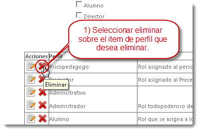
Al seleccionar Eliminar se muestra un mensaje de confirmación. ¿Desea eliminar el registro? Seleccionar Aceptar para continuar con el proceso de eliminación, de lo contrario cancelar y el perfil se mantendrá.
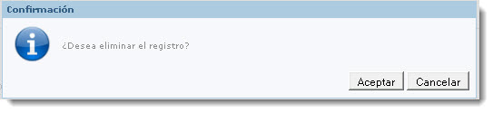
Al aceptar, el Perfil se eliminara de la lista de perfiles.
En caso de que el perfil tenga usuario asignados, el sistema no le permitirá eliminar cierto perfil y mostrara el siguiente mensaje.

Administración de Usuarios
Todas las personas que utilizan el sistema tienen asociado una Cuenta, para ingresar deben tener un nombre de Usuario y contraseña.
En esta sesión, mostraremos como el administrador puede registrar un nuevo Usuario o Modificar un usuario ya existente. Para realizar estas acciones dirigirse a la barra del Menú y posicionarse en Usuarios. En usuarios de despliegan dos opciones: Editar y Registrar.

Como registrar un usuario
Edu@r 2.0 cuenta con una base de datos actualizada obtenida de datos transaccionales de la entidad educativa, donde se encuentran registrados todos los posibles usuarios de Edu@r 2.0.
Para registrar un nuevo Usuario nos dirigimos a la barra del menú e ingresamos a Usuarios>>Registrarse. Donde se muestra la siguiente pantalla:
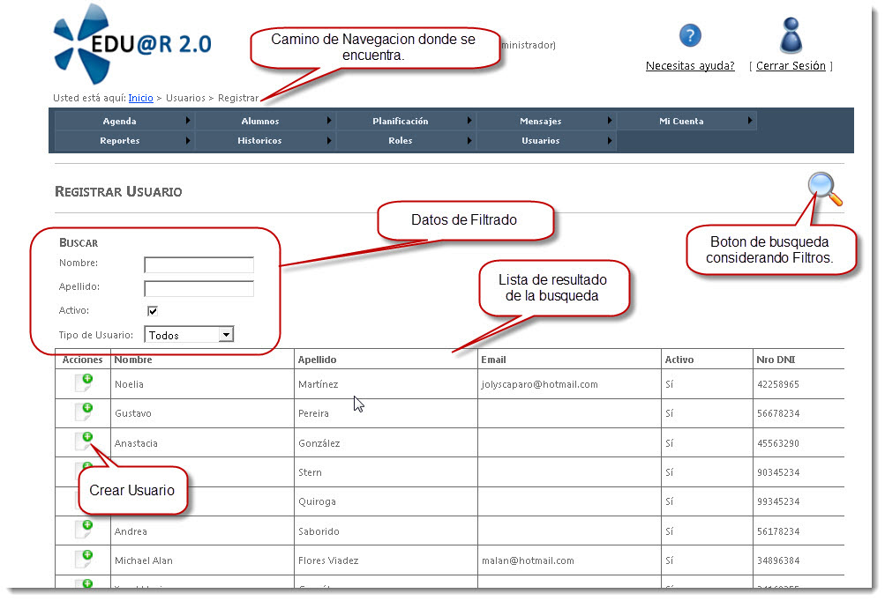
Edu@r 2.0 nos permite usar una lista de personas, extraída de la base de datos transaccional de la entidad educativa. Antes de registrar un nuevo usuario, primero buscamos la persona en esta lista de posibles usuarios. (En caso que no se encuentre la persona que desea, contactarse con el proveedor del sistema)

Nombre: Aquí podemos ingresar un nombre la persona que estamos buscando. (por ejemplo: Juan)
Apellido: Aquí podemos ingresar el apellido de la persona que buscamos.(por ejemplo: Perez)
Activo: si activamos este check con un tilde buscara a todas las personas que se encuentran vinculados actualmente a la entidad educativa, ya sea porque son parte del personal o son alumnos actuales o tutores registrados de los alumnos actuales. En caso de no tildar esta opción mostrara por ejemplo a personas que ya no están vinculadas a la entidad educativa actualmente. Por ejemplo ex alumnos o ex docentes.
Tipo de usuarios: aquí puede seleccionar el rol de la persona que esta buscando. Por ejemplo si es un Docente debe seleccionar Personal. Aquí puede seleccionar por ejemplo: Alumno, Tutor, Personal, Administrador, Todos o ninguno.
Luego de presionar la lupa se muestra en la pantalla el resultado de la búsqueda.
Al resultado de la búsqueda se enlistan con los siguientes datos Nombre, Apellido, Email, Nro DNI.

Se observa en la primer columna de Acciones en cada ítem del resultado de la búsqueda un icono que nos permitirá crear el usuario de la persona correspondiente a ese ítems. Al hacer click en Crear se abre una nueva pantalla como la siguiente.
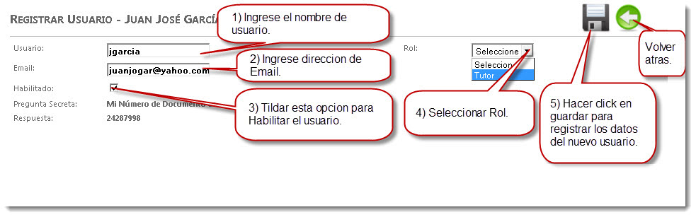
En la Pantalla aparecen los datos de la persona a quien queremos registrar una cuenta. Recuerde en esta pantalla tener en cuenta los siguiente datos.
Usuario: en este campo debe ingresar el nombre de usuario, con el cual quedara identificado de forma única esta persona en el sistema.
Email: Edu@r 2.0 muestra por defecto en este campo la dirección de email que esta registrada en la base de dato transaccional. Es importante registrar la cuenta de email de uso frecuente del usuario, ya que en esta cuenta se enviaran las notificaciones pertinentes.
Habilitado: El usuario que es registrado con éxito en Edu@r 2.0 y no esta habilitado, no podra iniciar sesión con su usuario. Para habilitar el usuario tildar el cuadro de check.
Pregunta secreta y respuesta: por defecto es el número de documento. El sistema no permite modificar estos campos.
Rol: Edu@r 2.0 muestra por defecto los roles asociado a la persona que obtiene de la base de datos transaccionales. En caso de querer otorgar un rol que no se encuentra disponible en la lista desplegable comunicarse con el proveedor del sistema.
Al hacer click en guardar se muestra un mensaje de confirmación como el siguiente.

Dar aceptar para confirmar los cambios, en caso contrario haga click en Cancelar y volverá a la misma pantalla donde se encontraba sin que guarde crear el usuario para esta persona.
En caso que los datos ingresados son correctos se muestra la siguiente pantalla manifestando el éxito de la creación del nuevo Usuario.
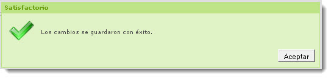
Puede suceder que usted allá ingresado algún dato mal y le mostrara el siguiente mensaje. En tal caso verifique los datos si están bien ingresados.
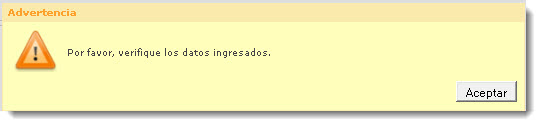
Recuerde que el nombre del Usuario debe ser único en todo el sistema, puede suceder que el nombre de usuario que esta ingresando ya este registrado en Edu@r 2.0. En tal caso al momento de confirmar los datos a guardar le mostrara el siguiente error.
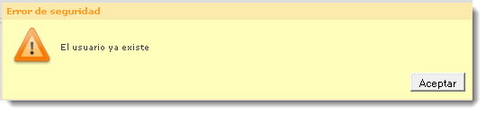
De aceptar en el mensaje y pruebe con un nuevo nombre de Usuario.
Como editar el perfil de un usuario
Para editar un Usuario nos dirigimos a la barra del menú e ingresamos a Usuarios>>Editar. Al hacer click en Editar se muestra la siguiente pantalla:
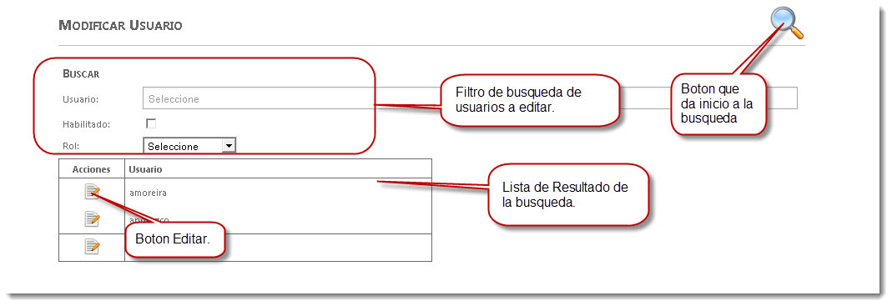
En esta pantalla identificamos en la parte superior Filtros que se puede ingresar para realizar una búsqueda entre todos los usuarios registrados en el sistema.
En la parte inferior se encuentra una tabla que contendrá el nombre de los usuarios que cumplen con los filtros ingresados.
Los campos de filtro son los siguientes:
Usuario: al hacer click en este campo de Usuario se despliega una lista ordenada alfabéticamente de todos los usuarios, a medida que escribe en este campo de Usuarios se muestra en esta lista desplegable los usuarios que comienzan con las letras ingresadas. Usted podrá seleccionar un usuario de esta lista.
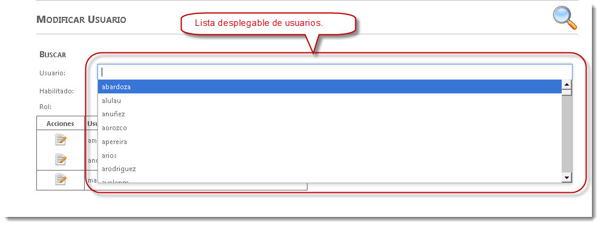
Habilitado: aquí nos permite buscar entre usuarios que estén habilitado, es decir aquellos usuario que ya pueden ingresar al sistema, y aquellos usuarios que han sido creados pero por algún motivo se los ha deshabilitado para usar Eduar@2.0 . En el caso de no conocer el nombre del usuario usted podrá realizar un filtro en habilitado y mostrara según que seleccione una lista de usuarios habilitados(si coloco la tilde) o deshabilitados (si no tiene tilde).
Rol: aquí se despliega una lista de roles y permite seleccionar un rol para realizar la búsqueda, de esta manera el resultado de la búsqueda mostrara todos los usuarios que tengan el rol que selecciono.

Una ves que localizo el usuario que desea modificar en la lista de resultados, hacer click en el botón de editar que aparece al lado del nombre de usuario, en la columna de acciones.

Recuerde que cualquier cambio que se realice al usuario debe guardarse para que se registren los cambios en el usuario.
Reportes
En esta sesión encontraremos la posibilidad de analizar información resumida del sistema. Obtener una vista de otra perspectiva del sistema, que nos permite analizar gráficos, tablas y resultados a consultas mas complejas.
Accesos
En esta sesión de accesos nos encontraremos con un resumen de información con respecto a accesos realizados a Edu@r2.0. Nos permite conocer que roles a ingresado a que paginas, en que fecha el sistema tiene mas acceso, etc. Con la posibilidad de analizar si el sistema esta siendo realmente aprovechado por la comunidad educativa.
Para ingresar a accesos debemos dirigirnos a la barra del menú y posicionarnos en Reportes y hacer click en Accesos.
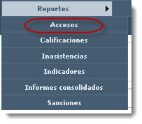
Al ingresar en Accesos se mostrara una pantalla “Consultar Accesos”. Esta pagina muestra un conjunto de campos en los cuales podemos detallar nuestra consulta.

Campos para especificar la Consultar que deseamos realizar son Paginas, Roles, Fecha desde y Hasta.
Si realizamos una consulta sin seleccionar datos en Paginas, ni Roles, ni Fecha Desde y Hasta. Obtendremos como resultado una lista de la cantidad de veces que accede un rol por día a una pagina en la última semana, que es la fecha que toma por defecto. y se muestra de la siguiente manera:

En la pantalla de resultado nos encontramos con un grupo de botones.
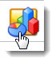Botón Graficar: Al hacer click en este botón se muestra una ventana con los resultados obtenidos en un Grafico.
Por defecto nos muestra los resultados en un grafico de Barras, sin embargo en el margen superior de la izquierda del grafico podemos cambiar el tipo de grafico y elegir el que mejor represente nuestra consulta.
Resultado en Grafico de Barra:

Resultado en Grafico de Línea:

Resultado en Grafico de Torta:

A este grafico también lo podemos exportar a un PDF, si hacemos click en el botón que se encuentra en el margen derecho superior del grafico de PDF. 
Ejemplo de exportación de grafico a PDF:

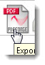Botón exportar a PDF:al hacer click en este botón nos muestra los resultados de la consulta en PDF. Como se muestra a continuación.

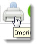Botón Imprimir: con el botón imprimir no permite enviar a imprimir en algún dispositivo de impresión conectado al equipo.
Criterios de Analisis:
Dentro de los criterios de Análisis de Reportes de Acceso no encontramos con Paginas, Roles, Fecha Desde y Fecha Hasta.
Paginas: en este campo podemos seleccionar la o las páginas que deseamos analizar. Para la selección nos posicionamos en el campo y hacemos click en el campo a completar, se despliega una lista de todas las páginas con la que cuenta el sistema Edu@r2.0. Seleccionar de una pagina a la vez, y se van agregando en este campo las páginas.
Si no ingresa ninguna página se obtendrá un análisis de todas las páginas del sistema.
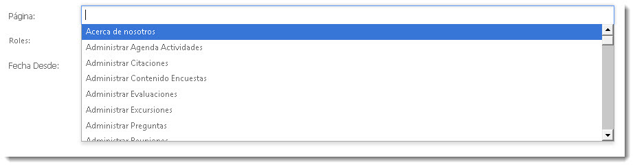
Roles: En este campo podemos seleccionar los roles que deseamos analizar. Se puede seleccionar más de un rol. Para la selección nos posicionamos en el campo y hacemos click en el campo a completar de roles, se despliega una lista de todas los roles con la que cuenta el sistema Edu@r2.0. Seleccionar de un rol a la vez, y se van agregando en este campo los roles a analizar.
Si no ingresa ningún rol se obtendrá un análisis de todos los roles del sistema.
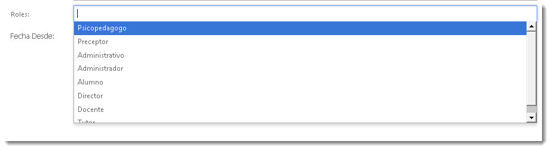
Fecha Desde y Hasta: en estos campos nos permite ingresar el periodo en el que deseamos analizar, para ello es necesario seleccionar una “Fecha Desde” será la fecha de donde comenzara a tomar los registrar a analizar y una “Fecha Hasta” que será la fecha hasta donde se tomaran los registros de accesos a analizar. El formato para ingresar la fecha es dd/mm/aaaa (día/mes /año) ejemplo ingrese “01/07/2012“ para ingresar día uno del mes de julio del año 2012.Si no ingresa una fecha desde y hasta, el sistema toma le periodo la ultima semana (los últimos 7 días).
La fecha también puede ser seleccionada como se muestra a continuación.
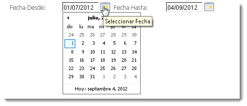
Calificacion
En estos reportes nos permite analizar el nivel con respecto a las calificaciones de los alumnos. Este análisis de las calificaciones lo podemos hacer a nivel del curso analizando los promedios generales de cada materia en un curso, la desviación que tiene y la cantidad de notas que estamos analizando. Como también podemos analizar lo mismo pero a partir de las notas de un solo alumno.
Otro análisis que podemos realizar es cuales son las notas mas frecuentes en una materia en un curso y hasta compararlo con otras materias. De la misma manera podemos ver las notas mas frecuentes que tiene en una materia un Alumno.

Para ingresar a Calificaciones debemos dirigirnos a la barra del menú y posicionarnos en Reportes donde se despliegan algunas opciones, hacer click en Calificaciones. Donde se abre la siguiente pantalla:

Criterios de consulta
Para General un reporte de Calificaciones, podemos seleccionar criterios para obtener un reporte de calificaciones relacionados a los que estamos necesitando.
• Ciclo Lectivo: en este campo selecciones el ciclo lectivo que desee analizar. Al hacer clic en la flecha y se despliegan los ciclos lectivos disponibles para analizar.(*) Este campo es obligatorio para realizar una consulta de calificaciones.

• Curso: en este campo permite seleccionar el curso que deseamos analizar. Al hacer clic en la flecha y se despliegan los Cursos disponibles para analizar. (*) Este campo es obligatorio para realizar una consulta de calificaciones.

• Alumno: el Criterio alumno, es un criterio no obligatorio. En el caso de no seleccionar un Alumno el sistema analizara un promedio general de las calificaciones del curso seleccionado. En caso de seleccionar una Alumno, el análisis se basara en las calificaciones de este alumno. Solo permite realizar el análisis de un alumno o de todo un curso.

• Asignatura: Este criterio no es obligatorio, en caso de dejar este campo vacío y enviar a consultar, se realizara un análisis de calificaciones de totas las asignaturas del curso.
Usted puede analizar calificaciones de todas las asignaturas, de un grupo de asignaturas o una sola asignatura.
Al hacer clic en el campo de asignatura se despliega una lista de todas las materias disponibles del curso seleccionado.

• Fecha desde y hasta: Este criterio es un campo obligatorio a completar. El análisis que se realiza de calificaciones es de un periodo, este periodo lo identificamos con una fecha desde y una fecha hasta. El análisis se realiza con las calificaciones que sean registrada su fecha esta dentro del rango de fecha establecido en el campo fecha desde y hasta.
Por defecto aparece el rango de fecha desde y hasta que corresponde al ciclo lectivo que esta seleccionado.
El formato de fecha a ingresar es dd/mm/aaaa, por ejemplo debe ingresar 22/09/2012 si quiere ingresar dia 22 del mes Septiembre del año 2012.

• Buscar resultado: Al seleccionar este botón se realizara la consulta de las calificaciones que cumplan con los criterios seleccionados y se los mostraron un una nueva pagina todos los resultados obtenidos.

• Resultados obtenidos: en esta pantalla de resultados se muestran las calificaciones que cumplan con los criterios seleccionados. Por cada calificación se detalla los siguientes datos: Alumno, Curso, Fecha, Asignatura, Calificación. Además de la obtención de estos resultados da la posibilidad de Graficar, exportar en PDF e imprimir.

Graficar: este botón permite tener una vista de los resultados obtenidos en un solo grafico.
Exportar en PDF: este botón le permitirá obtener un archivo PDF con detalle los resultados obtenidos, y un resumen de información que permite un mejor análisis.
Análisis de calificaciones de un curso en todas sus asignaturas.
Para este análisis vamos a completar los campos de Ciclo Lectivo, Curso. Y seleccionamos el botón Buscar.
Recordemos que en los campos que no seleccionamos datos, actuara la búsqueda con los datos por defecto cuando no se selecciona algo. En el caso de asignatura tomara todas las asignaturas del curso seleccionado del ciclo lectivo, y en el caso de Alumnos tomara por defecto todos los alumnos del curso seleccionado del ciclo lectivo. El rango de fecha desde y hasta que toma por defecto es el que corresponde al ciclo lectivo seleccionado.
A continuación vemos los pasos a seguir para obtener el reporte del curso en todas las materias:

Resultado de la búsqueda de datos a consultar.

Reporte en Grafico:

Reporte en PDF:


Análisis de calificaciones de un curso en un grupo de asignaturas.
En este análisis completaremos solo los campos de Ciclo Lectivo, Curso, Asignaturas. Y seleccionamos el botón Buscar.
Recordemos que en los campos que no seleccionamos datos, actuara la búsqueda con los datos por defecto cuando no se selecciona algo. En el caso de Alumnos tomara por defecto todos los alumnos del curso seleccionado del ciclo lectivo. El rango de fecha desde y hasta que toma por defecto es el que corresponde al ciclo lectivo seleccionado.
A continuación vemos los pasos a seguir para obtener el reporte del curso en un grupo de materias.

Obtenemos la siguiente pantalla con los resultados según criterios seleccionados.

Al seleccionar el botón graficar obtenemos la siguiente pantalla.

Al seleccionar el botón de exportar a PDF y se obtiene la siguiente resumen de información.


Análisis de calificaciones de un Alumno en todas sus asignaturas.
En este análisis completaremos solo los campos de Ciclo Lectivo, Curso, Alumno. Y seleccionamos el botón Buscar.
Recordemos que en los campos que no seleccionamos datos, actuara la búsqueda con los datos por defecto cuando no se selecciona algo. En el caso de Asignatura tomara por defecto todas las asignaturas del curso seleccionado del ciclo lectivo. El rango de fecha desde y hasta que toma por defecto es el que corresponde al ciclo lectivo seleccionado.
A continuación vemos los pasos a seguir para obtener el reporte del Alumno en las asignaturas del curso seleccionado.

Obtenemos la siguiente pantalla con los resultados según criterios seleccionados.

Al seleccionar el botón graficar obtenemos la siguiente pantalla.

Al seleccionar el botón graficar obtenemos la siguiente pantalla.


Análisis de calificaciones de un Alumno en un grupo de asignaturas.
En este análisis completaremos los campos de Ciclo Lectivo, Curso, Alumno y Asignaturas. Al finalizar presionamos el botón Buscar.
Recordemos que en los campos que no seleccionamos datos, actuara la búsqueda con los datos por defecto cuando no se selecciona algo. En este ultimo caso solo dejamos por defecto el rango de fecha desde y hasta, que toma por defecto la fecha que representa al ciclo lectivo seleccionado.
A continuación vemos los pasos a seguir para obtener el reporte del Alumno en un grupo de asignaturas seleccionadas.

Obtenemos la siguiente pantalla con los resultados según criterios seleccionados.

Al seleccionar el botón graficar obtenemos la siguiente pantalla.

Al seleccionar el botón de exportar a PDF y se obtiene la siguiente resumen de información.


Inasistencias
Sanciones
Indicadores